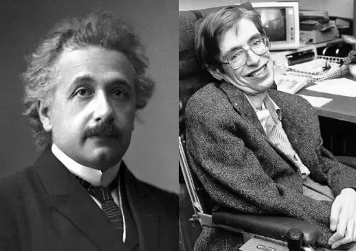
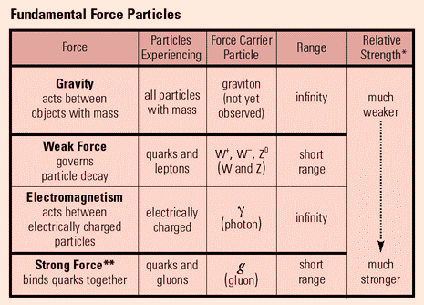
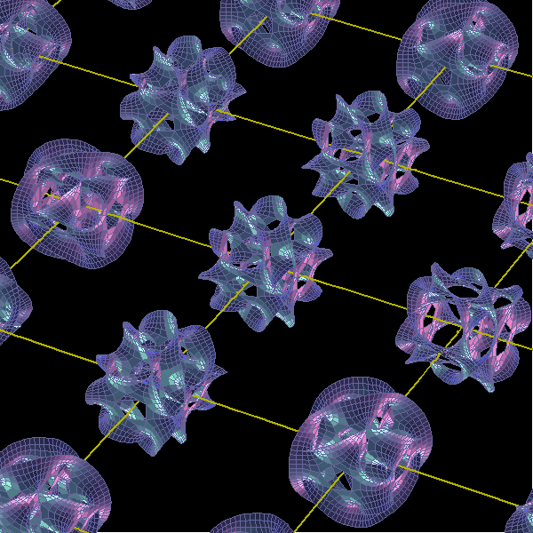
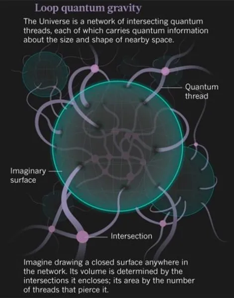

The fundamental nature of our curious human minds is to question every essential aspect of the universe we live in and learn about them. In the pursuit of such eternal knowledge, many intellectuals throughout history have sought to unravel the mysteries of the universe.
People have gained knowledge of particles as small as quarks to phenomena as vast as black holes. Even after acquiring so much knowledge, we realize there is still so much more to understand.

The recent baffling question among the physics community is, "What is the theory that can combine the properties of the four fundamental forces: electromagnetic, weak nuclear, strong nuclear, and gravity?" Or to put it simply: "The Theory of Everything."
We all know that gravity and electromagnetism are long-range forces, while the weak nuclear and strong nuclear forces are short-range. Einstein's General Theory of Relativity describes gravity as the curvature of the space-time fabric. Quantum mechanics explains the origin of the other three fundamental forces through particle interactions and gauge invariance. 21st-century scientists try to establish a way to incorporate Einstein's field equations and the Standard Model's particle equations to achieve a grand unified theory. But alas, they haven't found it yet. So, it's time for a new theory to solve this grand unification problem.

The two competing theories to solve this are string theory and loop quantum gravity.
String theory states that every fundamental particle in our universe is composed of tiny strings vibrating at specific frequencies and patterns, giving rise to all matter. It suggests that there are additional spatial dimensions beyond the familiar three, often proposing up to ten dimensions, which are beyond human perception. String theory also proposes that gravity is mediated by hypothetical particles called gravitons, providing a new perspective in particle physics.
On the other hand, loop quantum gravity attempts to quantize space-time itself, offering a different approach to unifying general relativity and quantum mechanics.

Loop quantum gravity postulates that space is composed of finite loops woven into a fabric or network. These networks of loops are called spin networks. The evolution of a spin network, or spin foam, occurs at the Planck length scale, approximately 10^−35 meters, and scales smaller than the Planck length are considered meaningless.
Consequently, not just matter but space itself exhibits an atomic structure.
Despite these theoretical developments, there is still no experimental evidence for these theories.

"The future awaits empirical evidence that will help humanity discover the grand unified theory."